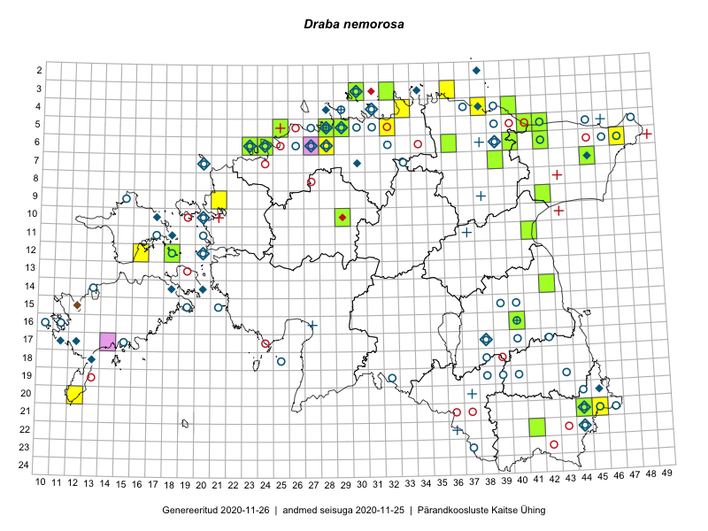

Draba nemorosa
Uuendatud: 2016-12-07
Kaardile koondatud taksonid: Draba nemorosa L.; Draba nemorosa var. hebecarpa Lindblom; Draba nemorosa var. leiocarpa Lindblom

Kaart põhineb 47 kirjel, neist vaatlusi 42 ja eksemplare 5. Taksonit on leitud 24 ruudust.
| Ruut | Vaatleja(d) | Vaatlusaeg | Kirje tüüp | Viide andmebaasikirjele |
|---|---|---|---|---|
| 05-41 | Thea Kull | 2015-06-02 | punkt | vaata PlutoFis |
| 05-41 | Thea Kull | 2015-06-02 | punkt | vaata PlutoFis |
| 06-40 | Peedu Saar, Timo Luhamäe | 2015-05-13 | ruut/ala | vaata PlutoFis |
| 07-39 | Peedu Saar, Timo Luhamäe | 2015-05-13 | ruut/ala | vaata PlutoFis |
| 05-32 | Rein Kalamees | 2015-06-08 | ruut/ala | vaata PlutoFis |
| 06-42 | Toomas Kukk, Eerik Leibak | 2015-04-27 | ruut/ala | vaata PlutoFis |
| 06-42 | Toomas Kukk, Eerik Leibak | 2015-04-27 | punkt | vaata PlutoFis |
| 04-38 | Rein Kalamees, Kersti Püssa | 2015-05-29 | ruut/ala | vaata PlutoFis |
| 04-38 | Rein Kalamees, Kersti Püssa | 2015-05-29 | punkt | vaata PlutoFis |
| 05-41 | Thea Kull, Peedu Saar | 2015-04-25 | punkt | vaata PlutoFis |
| 03-36 | Rein Kalamees, Kersti Püssa | 2015-05-31 | punkt | vaata PlutoFis |
| 03-36 | Rein Kalamees, Kersti Püssa | 2015-05-31 | ruut/ala | vaata PlutoFis |
| 11-41 | Meeli Mesipuu, Maret Gerz | 2015-05-14 | ruut/ala | vaata PlutoFis |
| 09-42 | Timo Luhamäe, Liina Oja | 2015-05-14 | ruut/ala | vaata PlutoFis |
| 09-42 | Timo Luhamäe, Liina Oja | 2015-05-14 | punkt | vaata PlutoFis |
| 09-42 | Timo Luhamäe, Liina Oja | 2015-05-14 | punkt | vaata PlutoFis |
| 14-42 | Karin Kikas, Elle Rajandu | 2015-05-18 | ruut/ala | vaata PlutoFis |
| 14-42 | Karin Kikas, Elle Rajandu | 2015-05-18 | punkt | vaata PlutoFis |
| 22-41 | Karin Kikas, Elle Rajandu | 2015-05-25 | punkt | vaata PlutoFis |
| 22-41 | Karin Kikas, Elle Rajandu | 2015-05-25 | punkt | vaata PlutoFis |
| 11-41 | Maret Gerz, Meeli Mesipuu | 2015-05-14 | punkt | vaata PlutoFis |
| 11-41 | Maret Gerz, Meeli Mesipuu | 2015-05-14 | punkt | vaata PlutoFis |
| 06-47 | Timo Luhamäe, Eerik Leibak | 2015-06-01 | ruut/ala | vaata PlutoFis |
| 05-25 | Mari Metsoja, Jaak-Albert Metsoja | 2015-05-30 | ruut/ala | vaata PlutoFis |
| 06-24 | Jaak-Albert Metsoja, Mari Metsoja, Ott Luuk | 2015-06-05 | ruut/ala | vaata PlutoFis |
| 06-23 | Mari Metsoja, Jaak-Albert Metsoja, Ott Luuk | 2015-06-04 | ruut/ala | vaata PlutoFis |
| 05-42 | Kaili Orav, Silvia Pihu | 2015-06-18 | ruut/ala | vaata PlutoFis |
| 06-47 | Timo Luhamäe, Eerik Leibak | 2015-06-01 | punkt | vaata PlutoFis |
| 03-30 | Mari Reitalu, Tõnu Ploompuu, Ott Luuk, Peedu Saar | 2014-06-01 | ruut/ala | vaata PlutoFis |
| 03-30 | Tiina Elvisto | 2015-05-04 | ruut/ala | vaata PlutoFis |
| 05-29 | Tiina Elvisto, Kadi-Liis Kesler | 2015-05-12 | ruut/ala | vaata PlutoFis |
| 04-40 | Ott Luuk, Tiit Hallikma | 2016-05-19 | ruut/ala | vaata PlutoFis |
| 06-28 | Tõnu Ploompuu | 2015-06-06 | ruut/ala | vaata PlutoFis |
| 09-21 | Sirje Lagle, Tõnu Ploompuu | 2015-05-16 | ruut/ala | vaata PlutoFis |
| 16-40 | Peedu Saar | 2016-05-22 | punkt | vaata PlutoFis |
| 05-28 | Kadi-Liis Kesler, Tiina Elvisto | 2015-05-12 | ruut/ala | vaata PlutoFis |
| 16-40 | Peedu Saar | 2016-05-22 | ruut/ala | vaata PlutoFis |
| 05-29 | Kadi-Liis Kesler, Tiina Elvisto | 2015-05-12 | ruut/ala | vaata PlutoFis |
| 05-25 | Jaak-Albert Metsoja, Mari Metsoja | 2015-05-30 | punkt | vaata PlutoFis |
| 06-24 | Jaak-Albert Metsoja, Mari Metsoja, Ott Luuk | 2015-06-05 | punkt | vaata PlutoFis |
| 06-24 | Jaak-Albert Metsoja, Mari Metsoja, Ott Luuk | 2015-06-05 | punkt | vaata PlutoFis |
| 06-23 | Jaak-Albert Metsoja, Mari Metsoja, Ott Luuk | 2015-06-04 | punkt | vaata PlutoFis |
| 05-41 | Peedu Saar, Thea Kull | 2015-04-25 | eksemplar | vaata PlutoFis |
| 07-45 | Peedu Saar, Thea Kull | 2015-04-27 | eksemplar | vaata PlutoFis |
| 06-40 | Peedu Saar, Timo Luhamäe | 2015-05-13 | eksemplar | vaata PlutoFis |
| 07-39 | Peedu Saar, Timo Luhamäe | 2015-05-13 | eksemplar | vaata PlutoFis |
| 03-30 | Ott Luuk | 2014-06-01 | eksemplar | vaata PlutoFis |